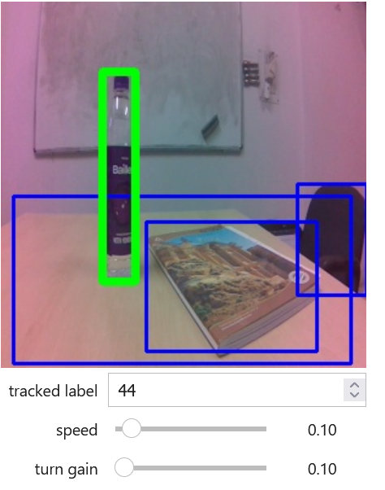
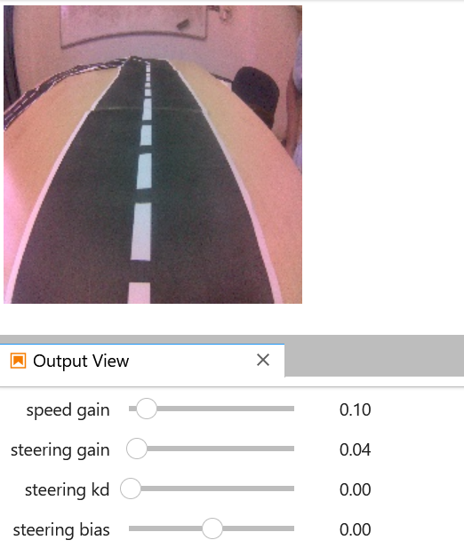

Jetbot
based on NVIDIA Jetson Nano
I thank my Ph.D. supervisor, Prof. Partha Sarathi Mandal, for giving me the opportunity to gain hands-on experience working with a real robot.
About JetBot
It is an affordable open-source robot. It includes a set of Jupyter notebooks which covers basic robotic tasks such as motor controls, object detection etc. For more detailed information, you can visit jetbot.org. We have used NVIDIA Jetson Nano 4 GB.
Apart from basic motion, we have tried
- Road Following
- Object Following
- Collision Avoidance
 Few Projects with a Single Jetbot
Few Projects with a Single Jetbot
We mostly used Jetpack 4.3 (4 GB Image)
Object Following
For this implementation, we use a pre-trained model, the SSD-mobile net model from the COCO dataset, which contains 90 common object categories. The pre-trained model is converted into a TensorRT engine for optimized performance on the Jetson Nano.
Every object in the dataset is tagged with a label. For example, the label for the bottle is 44. We can give a label as input in the "Tracked label" panel to make the robot follow another object from the dataset.

Road Following
We capture images of the road track from different places to create our own dataset. This dataset is used to train the Convolutional Neural Network (CNN, a powerful deep-learning architecture specifically designed for image recognition tasks). In preprocessing, the dataset is split into training and validation sets to evaluate the model's performance. These preprocess images are passed thorugh the model to identify the path. The model outputs a prediction that indicates the path's position relative to the Jetbot.
